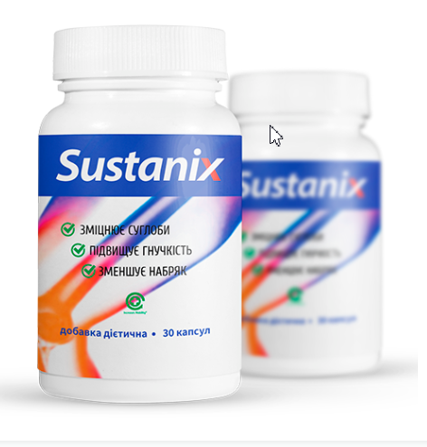
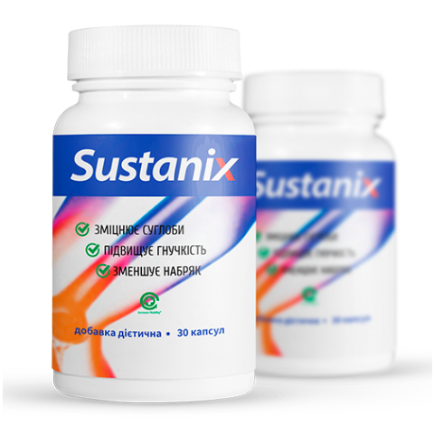

В рамках федеральной программы Украины
«Я назову 22 универсальных способа лечения суставов, даже если вам уже далеко за 40!»
Профессор Лука Апро
Декан фармацевтического факультета Женевского Медицинского Университета имеет 45-летний опыт лечения средствами традиционной медицины. Представитель Всемирной организации здравоохранения в области лечения травм опорно-двигательного аппарата.
Лечебная практика: более 45 лет.
«Запомните простую истину, и никого не слушайте: суставы поддаются лечению всегда, даже в самой глубокой старости»
Этот доктор заявляет, что вылечит 18-летний остеохондроз за пару месяцев. Что полностью излечит древнюю бабушку с самым запущенным артритом за 78 дней. А боли в суставах, говорит он, при правильном подходе уйдут за 4 дня! И, на протяжении 48 лет деятельности, он подтверждает каждое заявление практикой. Сразу после эфира на телевидении (на тему "как сохранить суставы в любом возрасте"), нам согласился дать интервью известный профессор Лука Апро
— Здравствуйте, профессор Апро. Скажите, верно ли утверждение, что заболевания суставов и остеохондроз - это "обязательные" спутники зрелого возраста?
— Здравствуйте, Ирина! Конечно же, это неправда. Обязательные спутники зрелого возраста - это излишнее доверие к врачам, которые лечат вас 10 лет, но все никак не вылечат. А на самом деле суставы, хондрозы и весь скелет изумительно поддаются лечению в любом возрасте. Это никакое не чудо, а обычная наука.
Причем, если знать секрет и приложить немного дисциплины - вылечиться возможно даже в домашних условиях и очень быстро, что делают тысячи моих пациентов
— И в чем же заключается этот секрет?
— Секрет - в понимании того, почему у вас болит. Вообще в энциклопедиях насчитывают до 147 возможных причин развития остеохондроза и артроза, но следствие железно одно - суставы, позвонки и хрящи теряют свою эластичность, отсюда и боль. Они изнашиваются из-за плохого кровоснабжения.
Вот и секрет - восстановив кровоснабжение сустава, мы его вылечиваем!
— Да, но ведь считается, что восстановить кровоснабжение после 45 лет почти невозможно?
— Глупости это все! Я себя вытащил из инвалидной коляски после аварии, а это пострашнее, чем 45-летие.
— А вы вытаскивали других из инвалидной коляски?
— И неоднократно. Но большая часть моих пациентов - обычные люди за 40, у которых болезни появились "с возрастом". Они приходят с очень похожими проблемами: остеохондроз, артроз, артрит, радикулит, защемление нерва. Эти болезни изматывают и мешают жить.
Они плачут, им больно, им даже ходить тяжело. А, казалось бы, обычные люди - не спортсмены и не инвалиды. И жалуются - "за что это мне, почему я?". А я отвечаю: давайте не причитать, а восстанавливать кровоснабжение.
— И как же восстановить кровоснабжение в таком возрасте?
— До недавнего времени я лечил людей с помощью движения и комплекса из 96 упражнений на тренажерах.
Это крайне эффективный, но очень тяжелый и долгий метод.
Людям больно, сложно, им не хватает времени
на посещение зала. Я верил, что должен быть более современный и легкий способ - и я его нашел.
— Как интересно! Расскажете о нем нашим читателям?
 — Расскажу. Наш центр первым в Украине получил сертифицированный доступ к новейшему препарату от остеохондроза и болей в суставах. Признаюсь вам, когда я о нем услышал впервые - я просто рассмеялся, поскольку не верил в его эффективность. Но я был поражен, когда мы завершили тестирование - 4 567 человек полностью излечились от своих болячек, это более 94% всех испытуемых. 5.6% почувствовали существенные улучшения, и лишь у 0.4% не было замечено улучшений.
— И что же это за препарат?
— Я говорю о специальном комплексном препарате. Это препарат "SUSTANIX" , который позволяет в кратчайшие сроки, буквально от 4-х дней, забыть о боли в спине и суставах, и в течение пары месяцев вылечить даже очень сложные случаи
Он разработан в Швейцарии, и швейцарское Министерство Здравоохранения потратило 1.3 млн долларов на разработку рецептуры. А мы, кстати говоря, заплатили почти 13 миллионов гривен за право реализации этого препарата на территории Украины и для стран бывшего СССР.
— И как же действует этот чудо-препарат?
— Как раз здесь никакого чуда нет, сухая наука. Препарат состоит из 3 натуральных компонентов – экстракта босвелии, глюкозамина и хондроитина, которые при контакте со старой, слабой человеческой клеткой, заставляют ее работать в 7 раз быстрей, и клетка постепенно самоомолаживается.
Даже за одно применение препарата, вы активируете около 930 000 клеток, которые служат пользой вашему кровотоку. Так и происходит лечение. Здесь главное стабильность.
— Звучит впечатляюще. Только объясните нам, что это значит для простых людей с болезнями?
— Это значит, что средневековая медицина уходит в прошлое, и вы сможете вылечить свои заболевания в домашних условиях за месяц-два. Препарат, не замораживает, не обезболивает, он "перезапускает" организм на клеточном уровне. Он устраняет причину самих болей и возвращает суставы, позвоночник в первоначальное, нормальное состояние. Больной не просто избавляется от симптомов, а удаляет корень болезни - ослабленное медленными, старыми клетками, кровоснабжение хрящей.
В первый же день перпарат запускает системы регенерации организма. Ну и купирует болевой синдром, это вы сразу ощутите. Уже через две-три недели лечение будет завершено, и, главное — не допустить повторного появления болей, оперативно повторив курс.
— Комплексный препарат SUSTANIX помогает только от артроза и остеохондроза?
Нет, я же вам говорю: он воздействует на клеточном уровне, восстанавливая кровоснабжение. Он лечит любое заболевание, связанное с суставами и позвоночником - артроз и артрит, ишиас, ревматизм, радикулит и остеохондроз, смещения позвоночных дисков. Вывихи, ушибы, синяки, переломы, да хоть натоптыши - препарат удивительно эффективен.
— Это очень интересное средство. И что, оно и правда именно избавляет от всех этих болезней, а не просто устраняет боль?
Комплексный препарат SUSTANIX и устраняет боль (на начальных этапах лечения), и полностью ликвидирует заболевание. Поймите меня правильно - я люблю физкультуру и спорт, и заниматься не перестану, но для большей части больных этот препарат - наиболее простой, эффективный и доступный способ лечения.
— Думаю, многие спросят: а где можно приобрести препарат?
Мы хотели начать масштабные продажи в аптеках - но никак не можем договориться с фармацевтами, поскольку препарат может навредить их бизнесу. Люди годами покупают их лекарства, а больных становится только больше, и их такое положение дел устраивает.
Поэтому сейчас мы продаем препарат исключительно на
официальном сайте
.
Но здесь есть и плюсы - мы продаем его без посредников, и это позволяет нам ставить цену в 4.7 раз ниже китайской.
Доставка производится Новой Почтой, наложенным платежом, а для использования пепарата не нужен контроль специалиста — лечение домашнее. Впрочем, не верьте мне на слово. Попробуйте препараты других производителей. Но я убежден, что вы не найдете ничего, даже отдаленно похожего на этот препарат по своей эффективности.
— Профессор Лука Апро, спасибо вам за интервью! Может быть вы хотите что-то сказать нашим читателям перед тем, как мы попрощаемся?
Да! Да, конечно. Я хочу обратить внимание читателей, что заболевания спины и суставов «молодеют», и даже слабые периодичные боли — повод обратить внимание на проблему. Врач не будет уговаривать вас лечиться.
И помните: заболевания, возникающие из-за болей в спине и суставах, не просто приносят дискомфорт. Они укорачивают жизнь на 10-15 лет.
Беседовала Ирина Махагонова
Фото из открытых источников
Всемирная организация здравоохранения
в рамках федеральной программы по борьбе с заболеваниями опорно-двигательного аппарата и костно-мышечной системы приняло решение
субсидировать стоимость
данного препарата
для жителей
г.
, как участников данной программы. То есть сейчас у вас есть возможность,
получить препарат по СПЕЦИАЛЬНОЙ СКИДКЕ 50% за упаковку для клиентов от меня
и навсегда забыть о болезнях, связанных с суставами и позвоночником.
Для этого нажмите зеленую кнопку ниже и оформите заявку.

Субсидировано
Всемирной
организацией
здравоохранения

по специальной цене
Субсидировано
Всемирной
организацией
здравоохранения